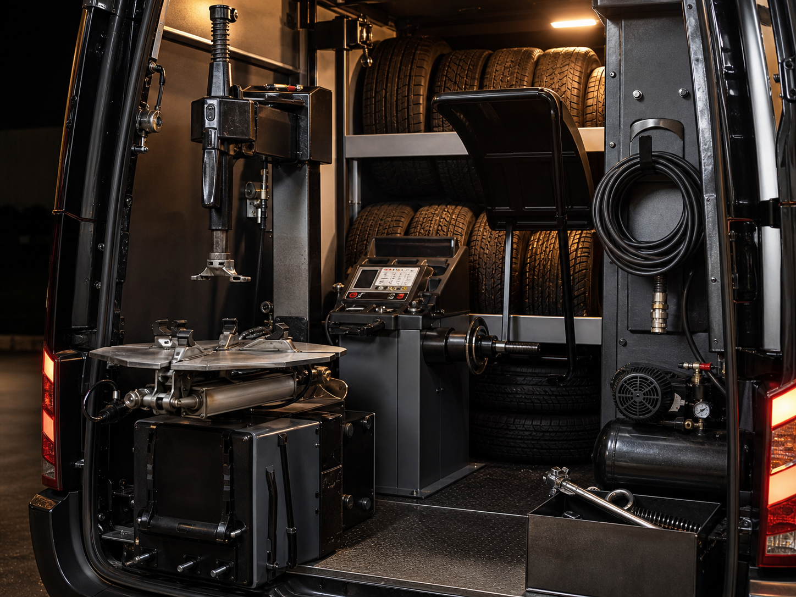

Есть подтверждённая оценка сервиса на Яндекс.Картах по данным карточки бизнеса.
Помощь с колесом там, где вы остановились
Колесо подвело - мастер приедет к машине и поможет продолжить путь 24/7
Выездной шиномонтаж по Москве, Московской области и Домодедово: прокол, спущенное колесо, срочная замена, балансировка или сезонная переобувка. Сначала уточняем ситуацию и называем ориентир по цене, затем согласуем работы.
24/7 можно обратиться ночью
4,6 рейтинг в Яндекс.Картах
19 отзывов о реальных выездах
до работ согласуем ориентир цены
В отзывах встречаются ночные вызовы, трасса, проколы и сезонная переобувка.
Если колесо спустило ночью или в выходной, можно сразу звонить и уточнять выезд.
Чтобы избежать недопонимания по цене, детали и ориентир согласуются заранее.
Когда важно не терять время
Не нужно ехать на спущенном колесе - помощь приезжает к месту стоянки
Выезд на место
Вы остаётесь у автомобиля, а не ищете ближайший сервис
Во дворе, на парковке, у дома, у офиса или на трассе. Сначала уточняем адрес, повреждение и тип автомобиля, затем называем ориентир и согласуем работы.
Прокол не должен срывать поездку
Мастер приедет с оборудованием и поможет восстановить движение, если ремонт возможен на месте.
Если автомобиль уже стоит на диске
Поможем заменить колесо, поставить запаску или подобрать решение по ситуации.
Переобувка без очереди в сезон
Выезд к дому, во двор, на парковку или к офису помогает не тратить время на поездку в сервис.
Ночной вызов без ожидания утра
Сервис работает круглосуточно, поэтому можно обратиться в ночное время.
Когда после ремонта нужна ровная езда
Балансировка и вулканизация выполняются на месте, когда это технически возможно.
Есть задача по грузовому или мото транспорту
В карточке указаны грузовой шиномонтаж и мотошиномонтаж. Возможность и цену лучше уточнить заранее.
Что можно решить на месте
Работы, которые помогают снова ехать или спокойно переобуть автомобиль

Оборудование с собой
Мастер приезжает подготовленным к работе у автомобиля
Шиномонтажные работы выполняются на месте, когда это технически возможно. Для сложных повреждений мастер заранее уточняет условия, расходники и стоимость.
Ремонт у автомобиля вместо поездки в сервис
Мастер приезжает с оборудованием и выполняет шиномонтажные работы на месте, если это технически возможно.
Вернуть колесо в работу после прокола
Помощь при проколе, спущенном колесе или повреждении шины с оценкой возможности ремонта на месте.
Переобуть сезон без очереди и дороги до сервиса
Замена комплекта шин с выездом к дому, во двор, на парковку или к офису.
Убрать вибрации после замены или ремонта
Балансировка помогает сделать движение ровнее и комфортнее, когда условия позволяют выполнить работу на месте.
Восстановить шину, если повреждение ремонтопригодно
Вулканизация применяется после осмотра повреждения и согласования объёма работ.
Получить помощь для грузового транспорта
Грузовой шиномонтаж уточняется по типу автомобиля, размеру колёс, адресу и условиям работы.
Согласовать работу с мотоколёсами заранее
Мотошиномонтаж выполняется по предварительному описанию задачи и подтверждению возможности выезда.
Освободить место после сезонной замены
Условия хранения шин лучше уточнить при обращении: наличие места и формат зависят от ситуации.
Проверить диск после удара или ямы
Прокатка помогает восстановить геометрию диска при допустимом повреждении.
Привести диски в порядок после эксплуатации
Покраска и алмазная проточка относятся к дополнительным работам и согласуются отдельно.
Не оставлять старые шины у дома или в багажнике
Можно уточнить помощь с утилизацией старых шин при оформлении заявки.
Получить дополнительную помощь на дороге
Запуск автомобиля доступен как дополнительная услуга, если проблема не только в колесе.
Чтобы цена не стала сюрпризом
Сначала разбираем ситуацию и называем ориентир, потом начинаем работы
Стоимость зависит от ситуации - уточните цену до начала работ. На итог влияют адрес, время, тип автомобиля, сложность повреждения, расходники и дополнительные работы.
01Где стоит авто
Адрес, район, трасса или удалённость от мастера.
02Когда нужен выезд
День, ночь, срочность и предварительная запись.
03Что с колесом
Прокол, порез, замена, переобувка, размер и тип транспорта.
Когда нужен выезд прямо к автомобилю
от 3000 ₽Итог зависит от адреса, времени, типа автомобиля и сложности работ.
Когда нужно переобуться без поездки в сервис
от 2500 ₽Стоимость уточняется по радиусу, размеру колёс и объёму работ.
Когда проблема срочная и нужно понять сценарий
расчёт по ситуацииОпишите проблему - мастер назовёт ориентир до выезда или до начала работ.
Когда транспорт грузовой или мото
по согласованиюЦена зависит от типа транспорта, размера колёс и условий работы.
Что сказать, чтобы расчёт был понятнее
- Сообщите адрес или точку на карте
- Опишите проблему: прокол, порез, замена, переобувка
- Уточните тип автомобиля и размер колёс
- Мастер назовёт ориентировочную стоимость
- Работы начинаются после согласования
Чтобы стоимость была понятной заранее, мы уточняем детали до начала работ. Срочный ночной выезд, трасса, сложные повреждения, расходники и дополнительные работы могут влиять на итог.
Чтобы избежать недопонимания по цене, опишите проблему максимально точно.
Рассчитать стоимость по телефонуБез лишней неопределённости
Пять шагов от звонка до понятной оплаты на месте
Вы быстро объясняете, что случилось
Назовите проблему, место, тип автомобиля и насколько срочно нужна помощь.
Получаете ориентир до начала работ
Мастер задаёт несколько вопросов и оценивает цену, выезд и возможность ремонта.
Не перемещаете автомобиль без необходимости
Выезд возможен домой, во двор, на парковку, к офису или на трассу.
Проблему решают на месте
Ремонт, замена, переобувка или другая помощь выполняются по согласованному сценарию.
Платите после согласованных работ
Доступна оплата наличными или картой.
Почему это снижает стресс
Сервис закрывает три главных риска: ночь, место остановки и непонятную цену
Можно звонить ночью и в выходные
Круглосуточный график помогает не ждать открытия стационарного сервиса.
Не нужно рисковать поездкой на спущенном колесе
Мастер приезжает к автомобилю: во двор, к дому, на парковку, к офису или на трассу.
Работы выполняются с выездным оборудованием
По отзывам клиентов, мастера приезжают подготовленными к работе на месте.
Есть опыт срочной помощи на дороге
В отзывах есть случаи выезда на М4 и помощи при срочной замене колеса.
Можно выбрать удобный способ оплаты
В карточке указана оплата картой и наличными.
Сезонную переобувку можно планировать
Для сезонной замены шин можно заранее согласовать время.
Есть гарантия, условия уточняются по виду работ
В карточке бизнеса указана гарантия на работы.
Решение подкреплено оценками клиентов
У сервиса есть рейтинг 4,6, 24 оценки и 19 отзывов на Яндекс.Картах.
Реальные сценарии из отзывов
Клиенты описывают ночные вызовы, трассу, проколы и работу на месте
“Позвонили, договорились, приехали достаточно быстро. Работы выполнены качественно, как для себя. Также помогли с заменой колодок, подобрали и заказали детали.”
Светлана14 февраля 2023“Шиномонтаж профессиональный, мастера вежливые и пунктуальные, быстро прибывают на точку вызова и предлагают хорошую цену за ремонт.”
Диана Колкая26 мая 2024“Ночью на М4 сел на диск. В течение часа приехали с запаской и быстро поменяли колесо. С инцидента до решения прошло 1,5 часа.”
Владислав6 мая 2024“Пробил колесо на трассе, сработали грамотно: приехали уже с колесом и быстро всё заменили.”
Инкогнито 361712 апреля 2024“Ехал ночью, пробил шину, не знал что делать. Нашёл мобильный шиномонтаж на карте, приехали минут через 20, оборудование было с собой, на месте починили.”
Соня А.16 февраля 2023“Работает профи, отремонтировал боковой порез качественно, есть гарантия на работу.”
Юрий Машков5 марта 2024“Вызываю на дом шиномонтаж, так как три автомобиля нужно было сделать. Уже три года пользуюсь услугами.”
Лена Б.13 февраля 2023“Быстро приехали! Всё супер.”
Dasha Repina18 августа 2023Чтобы не было недопонимания по цене, уточняйте детали сразу
Срочные ночные выезды, трасса, сложные повреждения и дополнительные работы могут отличаться по стоимости. При заявке лучше сразу описать проблему, адрес, тип автомобиля и уточнить ориентировочную цену.
Перед звонком
Ответы, которые помогают быстрее принять решение и вызвать мастера
Вы работаете ночью?
Да, сервис работает круглосуточно каждый день.
Можно вызвать мастера на трассу?
Да, выезд возможен на трассу, во двор, к дому, офису или на парковку. Точный выезд зависит от адреса и ситуации.
Сколько стоит выездной шиномонтаж?
В карточке указана услуга мобильного шиномонтажа 24/7 от 3000 ₽. Итоговая стоимость зависит от расстояния, времени, типа автомобиля и сложности работ. Лучше уточнить цену до начала работ.
Сколько стоит сезонная переобувка?
Сезонная переобувка на выезд указана от 2500 ₽. Итог зависит от размера колёс, адреса и объёма работ.
Можно оплатить картой?
Да, в карточке указана оплата картой и наличными.
Есть ли гарантия?
В карточке бизнеса указана гарантия. Условия лучше уточнить при оформлении заявки, так как они зависят от вида работ.
Вы занимаетесь грузовым шиномонтажом?
Да, в карточке указаны грузовой шиномонтаж и восстановление грузовых шин. Стоимость и возможность выезда уточняются по типу транспорта.
Можно заранее записаться на переобувку?
Да, доступна предварительная запись.
Что сказать мастеру при звонке?
Назовите адрес, тип автомобиля, проблему с колесом, размер колёс, есть ли запаска и насколько срочно нужна помощь.
Почему цена может отличаться?
На стоимость влияют расстояние, время суток, срочность, размер колёс, тип автомобиля, сложность повреждения и расходные материалы. Поэтому лучше заранее получить расчёт.
Быстрый старт заявки
Опишите место и проблему - мастер уточнит цену и возможность выезда
Работы начинаются после согласования. Чем точнее описание, тем понятнее будет предварительный расчёт.
Связь без поиска по сайту
Позвоните сразу, если машина уже стоит на спущенном колесе
Телефон: +7 (926) 023-73-44
Адрес: Станционная ул., 3, Домодедово, Московская область
Режим: круглосуточно, ежедневно